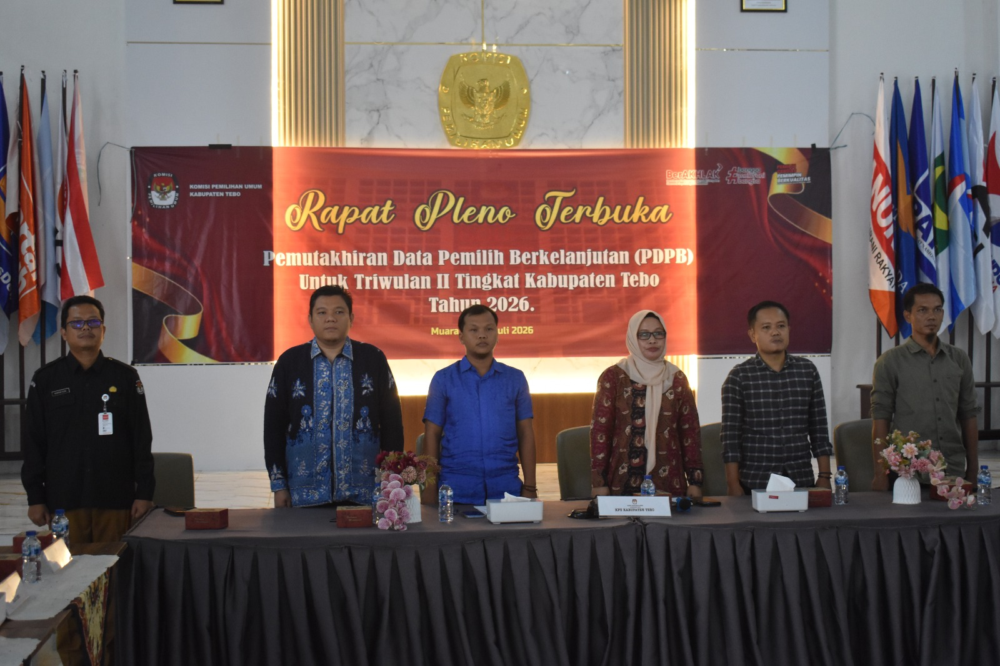

TEBO – Komisi Pemilihan Umum (KPU) Kabupaten Tebo telah melaksanakan Rapat Pleno Rekapitulasi Pemutakhiran Data Pemilih Berkelanjutan (PDPB) Triwulan II Tahun 2026 sebagai bagian dari pelaksanaan pemutakhiran data pemilih secara berkelanjutan sesuai dengan ketentuan peraturan perundang-undangan.
Rapat pleno tersebut dilaksanakan oleh jajaran KPU Kabupaten Tebo melalui Divisi Perencanaan, Data, dan Informasi dengan melakukan pengolahan, verifikasi, dan validasi data pemilih berdasarkan hasil sinkronisasi data kependudukan serta masukan dari berbagai pihak terkait. Proses ini bertujuan untuk memastikan data pemilih tetap akurat, mutakhir, dan dapat dipertanggungjawabkan sebagai dasar penyelenggaraan pemilu dan pemilihan.
Berdasarkan hasil Rekapitulasi Pemutakhiran Data Pemilih Berkelanjutan (PDPB) Triwulan II Tahun 2026, terdapat 5.355 data pemilih yang mengalami perubahan elemen data, sebanyak 2.193 pemilih dinyatakan Tidak Memenuhi Syarat (TMS), serta 8.072 pemilih baru yang memenuhi syarat untuk didaftarkan ke dalam daftar pemilih berkelanjutan. Setelah seluruh proses pemutakhiran selesai dilaksanakan, jumlah Data Pemilih Berkelanjutan Kabupaten Tebo menjadi sebanyak 279.051 pemilih.
Pelaksanaan PDPB Triwulan II Tahun 2026 merupakan bentuk komitmen KPU Kabupaten Tebo dalam menjaga kualitas daftar pemilih agar selalu akurat, mutakhir, dan komprehensif. Data pemilih yang berkualitas menjadi salah satu fondasi penting dalam mendukung penyelenggaraan pemilu yang demokratis, transparan, dan berintegritas.
KPU Kabupaten Tebo akan terus memperkuat koordinasi dengan Dinas Kependudukan dan Pencatatan Sipil, instansi terkait, serta membuka ruang partisipasi masyarakat dalam memberikan masukan terhadap data pemilih. Sinergi tersebut diharapkan mampu meningkatkan kualitas daftar pemilih sehingga setiap warga negara yang memenuhi syarat dapat menggunakan hak pilihnya pada Pemilu dan Pemilihan mendatang.